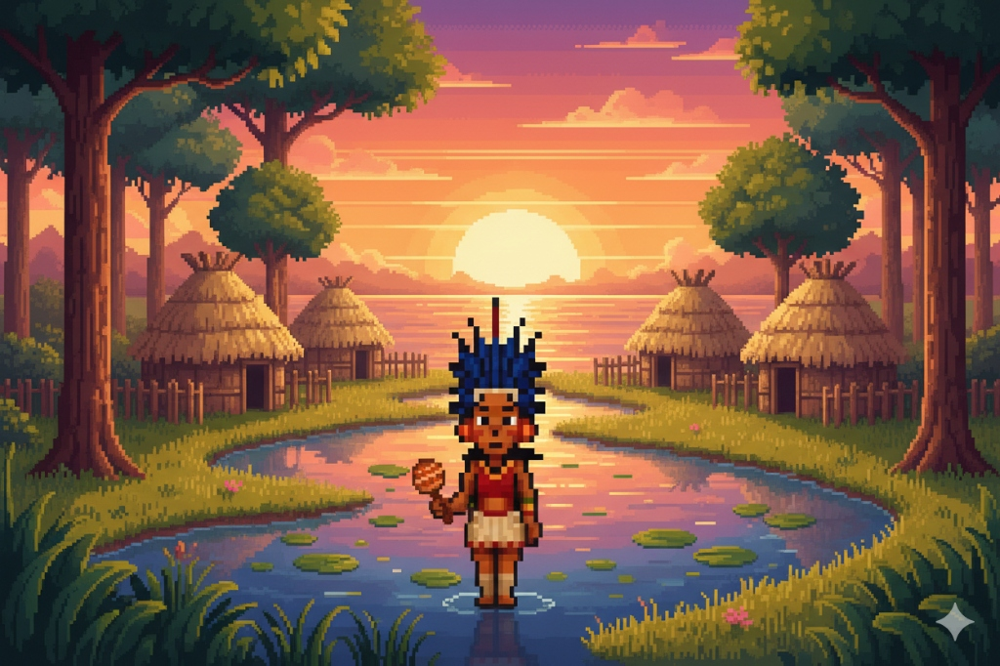
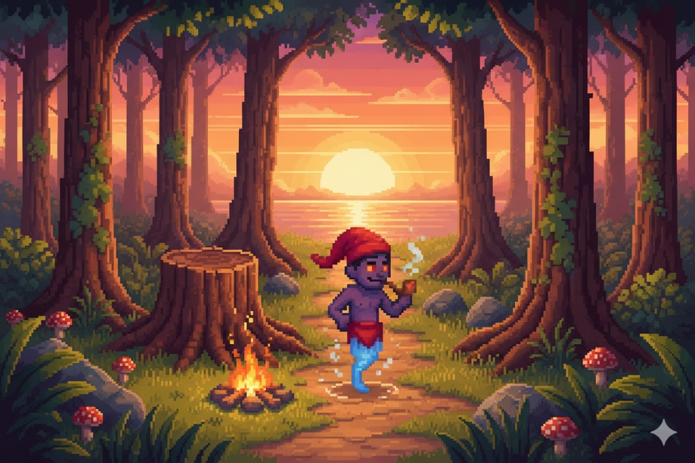
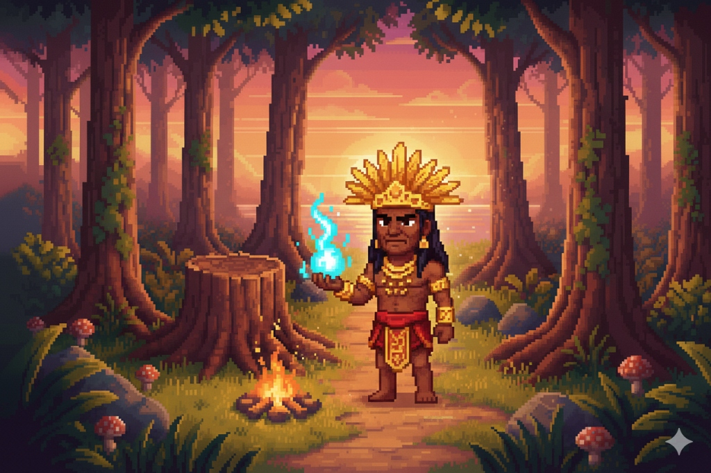

Vingue seu povo, descubra os segredos dos deuses e traga a luz de volta.
Explorar PindoramaEm um tempo em que as sombras começaram a devorar as matas, Tekoá, um jovem guerreiro, descobre a terrível traição de Tupã. Os deuses silenciaram, e Guaraci, o sol, desapareceu.
Munido apenas de armas ancestrais e da coragem de seu povo, Tekoá deve atravessar os quatro cantos de Pindorama para encontrar o paradeiro de Guaraci e restaurar o equilíbrio do mundo.

O Protagonista
Nasceu em uma aldeia indígena durante tempos sombrios. Seu objetivo e conseguir justiça pela a morte do seu pai e dar fim aos tempos sombrios de Pindorama, enfrentando diversos desafios ao longo da jornada

O Aliado Duvidoso
Descrito como um menino travesso de uma perna só, com um gorro vermelho e cachimbo, o Saci é um personagem bastante conhecido do folclore brasileiro. Sua lenda se originou entre as tribos indígenas Tupi-Guarani do sul do Brasil, sendo que a palavra "Saci" deriva do termo tupi "sa'si", que significa "pássaro". O Saci pode ser encontrado nas região sul pode ser tanto amigo quanto inimigo, porem a pergunta que fica é: podemos confiar?

Deus Supremo
Deus do trovão e da criação do mundo se revoltou contra a humanidade lançando um período de trevas para a humanidade, após assassinar o pai de tekoá traçou uma linha de guerra contra os humanos. Tem diversos apoiadores no meio folclórico, mas também diversos inimigos a favor da paz
Colete Madeira, Fibras e Penas para criar itens essenciais.
Cultive recursos ancestrais para fortalecer sua aldeia.
Domine o Arco e Flecha, a Borduna e a Zarabatana.
Sob a proteção da copa das árvores e o ritmo das chuvas equatoriais, o Norte aguarda os mais audazes. Enfrente a umidade implacável e descubra uma aldeia vibrante em tons de esmeralda, onde cada fibra de suas vestes é moldada para resistir às tempestades. O Norte do Brasil tem clima equatorial, quente e úmido, com chuvas intensas praticamente o ano todo. É o segundo bioma apresentado. Nessa região aparecem animais como: boto-cor-de-rosa, peixe-boi, jaguar (onça-pintada), macaco-aranha, preguiça, arara-vermelha e tucano. Também encontramos animais que não são nativos, mas foram introduzidos, como bois, búfalos, porcos e galinhas. Esses animais são voltados para consumo e vão dropar itens como couro, carne, leite e ovos.
Entre o brilho do ouro nativo e o rugido da Onça-Pintada, você deverá dominar a terra. Plante guaraná e cacau, crie búfalos e desvende os segredos dos rios onde o Boto-Cor-de-Rosa e o Peixe-Boi reinam absolutos. A Amazônia não é apenas um bioma; é um teste de sobrevivência e prosperidade.
Sinta o calor intenso e a força de uma terra que nunca se curva. No Nordeste, você desbrava o rastro avermelhado do solo semiárido até encontrar o frescor do litoral úmido. Sob um céu de azul infinito, onde a Arara-Azul cruza o horizontee, as aldeias erguem-se imponentes em tons de barro e fogo. O Nordeste apresenta clima semiárido, quente e seco, com chuvas concentradas no primeiro semestre do ano. É o terceiro bioma apresentado. Os animais encontrados são: arara-azul, tamanduá-bandeira, lobo-guará, veado-campeiro, capivara, tucano, jacaré e ema. Animais não nativos introduzidos na região são: cabras, ovelhas, bois, búfalos e galinhas. Esses animais são voltados para consumo e vão dropar itens como couro, carne, leite e ovos.
Vista trajes leves, domine a escassez de água e transforme a seca em oportunidade. Entre cactos e falésias, crie cabras, cultive o caju e extraia as riquezas do ouro e cobre escondidos sob a poeira. Aqui, cada gota de chuva é um evento e cada conquista é uma lenda.
Céus amplos e árvores retorcidas. Onde a terra respira poeira e ouro. É um clima tropical sazonal com verões chuvosos e invernos secos. O primeiro bioma apresentado no jogo, onde encontramos a aldeia de Tekoá. Sua biodiversidade varia de animais como: Tamanduá – bandeira, onça pintada, lobo – guará, tucano, capivara, arara – azul e jacaré. Há também animais que habitam na região, mas não são nativos de lá, como vacas, bois, bodes e búfalos. Esses animais são para consumos e vão dropar itens como couro e carne.
Mata de Araucária e névoa. A resistência sob as araucárias. O clima é subtropical úmido, com verões quentes e invernos frios, com ocorrência de geadas e neve em algumas regiões. A vegetação é caracterizada pela Mata de Araucárias, com destaque para o pinheiro-do-paraná, além de campos e matas de araucária. A fauna é composta por animais como: onça- pintada, lobo-guará, veado-campeiro, capivara, tucano, arara-azul e jacaré. Há também animais que habitam na região, mas não são nativos de lá, como vacas, bois, bodes e búfalos. Esses animais são para consumos e vão dropar itens como couro e carne.
| Recurso | Mínimo | Recomendado |
|---|---|---|
| SO | Windows 10 | Windows 10/11 |
| Processador | Intel i3 3ª Ger | Intel i5 6ª Ger |
| Memória | 8GB RAM | 16GB RAM |
| Placa de Vídeo | GTX 750 | GTX 1050 Ti |
| Armazenamento | 10GB SSD | 20GB SSD |